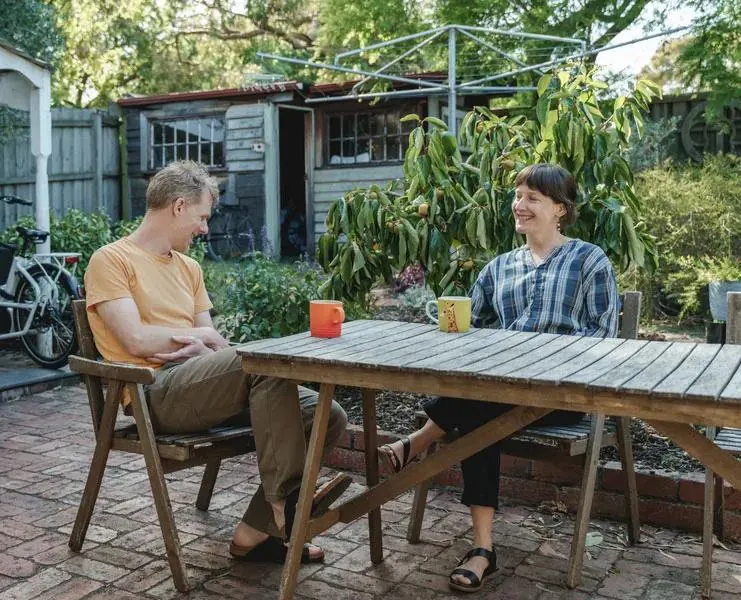
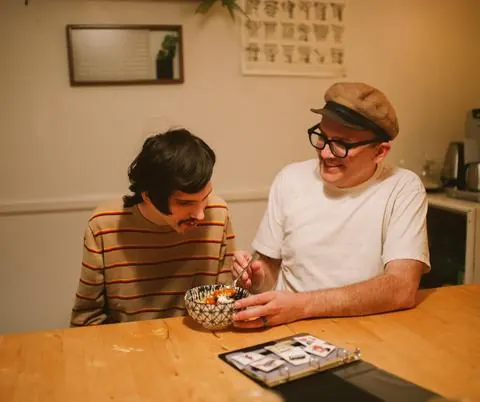

Living alone
Keep your own space and routines, with appropriately planned daily living or SIL supports where eligible.
Where you live, who you live with and the support you receive should begin with your choices, not an available group-home vacancy.
Living by Design is Kukoon’s personalised approach to exploring, designing and supporting individual living arrangements. You might want to live alone, share with someone you choose, remain in your existing home or consider a host or housemate arrangement. We explore what is suitable and possible with you, then identify the right support pathway.

We start with the life you want, the people important to you, your routines and the support you need. We do not assume everyone needs a group home, a host family or the same funding arrangement.
Living alone with individual support, sharing with a chosen housemate, living with a host, or arranging assistance around an existing home may all be worth exploring. Every option depends on your preferences, assessed needs, available people, safety and funding.
Keep your own space and routines, with appropriately planned daily living or SIL supports where eligible.

Share a home with someone compatible, with clear household boundaries and agreed assistance where appropriate.

Explore a carefully assessed arrangement with a person or household; a host is never assumed to be suitable simply because they have expressed interest.
ILO may support the exploration, design and implementation of eligible individual living arrangements, including appropriate host or housemate supports. ILO is not a housing purchase, rent or ordinary living-cost payment.
Explore ILOSIL relates to eligible assistance or supervision with daily tasks. It does not itself fund a property, and individual SIL does not automatically require a shared group-home arrangement. Suitability and funding are assessed individually.
Explore individual SILDepending on your plan and circumstances, assistance with daily living may support everyday routines in a home you choose. It is not interchangeable with ILO or SIL, and availability must be checked.
Living independentlyOur network of potential hosts, housemates and other supporters helps us explore possibilities. Every individual and proposed arrangement must undergo appropriate checks, assessment and approval before it can be considered for a participant.
Start with a conversation about your life, preferences, current home and what you would like to change.
Explore possible living arrangements and the support you need, without promising an available home or a funding outcome.
Assess feasibility, safety, funding, household compatibility and responsibilities with the appropriate Australian team members.
Design the practical arrangement, agreements, contingencies and transition before any move or service commencement.
Support, monitor and adjust the arrangement over time, with clear escalation and backup plans.
People exploring a move, a different living arrangement, living alone, alternatives to group accommodation or support in their existing home, and the families, guardians, support coordinators and allied health professionals helping them plan.
We will discuss the relevant NDIS pathway, your current plan and what information is needed. We cannot guarantee funding, a particular home or a specific living arrangement.
Not necessarily. Living by Design is the service conversation; ILO, eligible individual SIL and other daily living supports are different pathways assessed according to the person and their NDIS plan.
That may be possible where a safe, workable arrangement and appropriate support can be designed and funded. We assess each situation individually.